Pescando

Pescar es una manera fácil de ganar dinero mientras esperas que maduren tus cultivos. Para comenzar tu aventura de pesca, primero debes conseguir una caña de pescar. Vaya a la casa de Zack en Mineral Beach entre las 10:00 a. m. y aproximadamente las 3:30 p. m. para encontrar al transportista rebuscando entre sus pertenencias. Él encontrará una caña de pescar barata y te la dará gratis. Necesitarás tener espacio en la sección de Herramientas de tu mochila para activar este evento.
Se puede pescar en cualquiera de los canales que rodean Mineral Town. Equipa la caña de pescar, presiona el botón Y para lanzar el anzuelo al agua y luego espera hasta que veas un "!" Aparece una burbuja sobre la cabeza del granjero. Para pescar el pescado capturado, presione el botón Y nuevamente. No es necesario presionar el botón de acción una y otra vez para la versión Switch de Friends of Mineral Town.
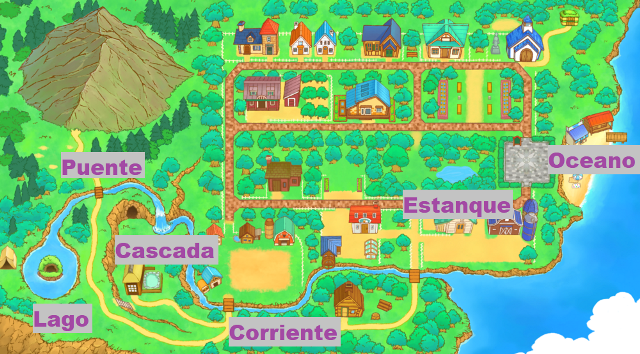Hay 6 zonas de pesca alrededor de Mineral Town:
- El Lago en invierno se congela dando acceso a la cueva.
- Dirigiendose a la colina de la madre hay un Puente donde puedes pescar.
- La Cascada donde vide la diosa de la cosecha y se encuentra serca de las aguas termales.
- La corriente o arroyo se encuentra el la parte de abajo de tu granja.
- El Estanque es el area nueva que esta en esta version.
- El Oceano se encuentra en la playa.
No podrás pescar muchos peces hasta que mejores tu caña de pescar en Saibara's Forge. Las herramientas mejoradas se pueden cargar manteniendo presionado el botón Y y luego soltándolo para lanzar. El nivel de carga requerido para que aparezca el pez se enumera en la siguiente tabla
Aunque hay una variedad de peces, los peces que pesques se clasificarán en peces pequeños (24 cm o menos), peces medianos (25 cm a 49 cm) o peces grandes (50 cm o más). La misma especie de pez puede venir en uno o dos tamaños, y no sabrás lo que obtendrás hasta que lo enrolles. Las ganancias que obtengas dependerán del tamaño del pez y no del tipo de pez capturado.
- Peces Pequeños: 50 G (modo normal) o 60 G (modo simple)
- Pescado Mediano: 120 G (modo normal) o 144 G (modo simple)
- Peces Grandes: 200 G (modo normal) o 240 G (modo simple)
Cositas que no son peces
También se pueden sacar otros objetos del agua. Puedes atrapar basura como botas, espinas de pescado, latas vacías y ramas. Esta basura no se puede arrojar nuevamente al agua, pero puedes tirarla al bote de basura en Rose Plaza o venderla a través de tu contenedor de envío por 1 G cada una.
El Fósil antiguo y el Tesoro pirata son articulos que se consiguen pescando pero tambien se lo pueden conseguir al entrenar tu mascota con el juego del frisbi en la playa, es un evento aleatorio y se trata de que al lansar el disco la mascota lo seguira pero se distraera con algo y se pondra a escarbar enves de ir por el frisbi y encontrara un objeto que puede ser el fosil o el tesoro.
Hay otros artículos especiales que puedes capturar en el océano después de mejorar tu caña de pescar (consulta los niveles mínimos requeridos a continuación) y cargar tu herramienta al nivel de potencia apropiado antes de lanzarla al agua:
| Nombre | Estaciones | Ubicación | Nivel de carga | Objeto |
|---|---|---|---|---|
| Balla de energia | Invierno | Océano | 5 o superior | 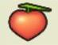 |
| Fósil antiguo | Otoño | Océano | 6 o superior | 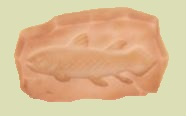 |
| Tesoro pirata | Primavera | Océano | 5 o superior |  |
| Mensaje embotellado | Primavera | Océano | 5 o superior | 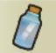 |
Lista de peces normales
Hay 50 peces normales que puedes pescar; El juego original de GBA tenía 45 peces.
| Nombre | Estaciones | Ubicación | Nivel de carga | Tamaño maximo | Pez |
|---|---|---|---|---|---|
| Bacalao Japones | Todo el año | Océano | 3 | 40 cm | 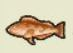 |
| Jurel | Todo el año | Océano | 3 | 40 cm | 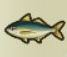 |
| Piscardo | Todo el año | Lago, Puente, Estanque | 1 | 15 cm | 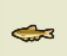 |
| Trucha | Todo el año | Lago, Puente, Estanque | 1 | 25 cm | 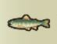 |
| Ronco | Todo el año | Océano | 3 | 40 cm | 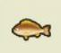 |
| Sardina | Todo el año | Océano | 1 | 25 cm | 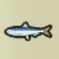 |
| Char | No debe ser Invierno | Puente, Estanque | 4 | 50 cm |  |
| Dace | Todo el año | Cascada, Corriente, Estanque | 2 | 35 cm | |
| Angila | Todo el año | Corriente | 5 | 100 cm |  |
| Cacho | Todo el año | Corriente | 1 | 15 cm | 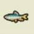 |
| Bonito | No debe ser Invierno | Océano | 5 | 90 cm | 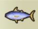 |
| Pez Solla | Todo el año | Océano | 4 | 60 cm | 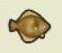 |
| Pez Ballesta | No debe ser Verano | Océano | 2 | 30 cm | 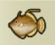 |
| Carpa Dorada | Todo el año | Cascada, Corriente | 1 | 20 cm | 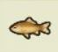 |
| Carpín* | Todo el año | Cascada, Corriente | 2 | 30 cm | 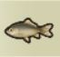 |
| Mero de diente largo | No debe ser Verano | Océano | 4 | 70 cm | 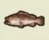 |
| Carpa cabezona | Todo el año | Lago, Corriente | 5 | 100 cm | 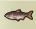 |
| Salmón | Verano, Otoño | Corriente | 4 | 70 cm | 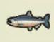 |
| Caballa | Todo el año | Océano | 4 | 50 cm | 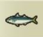 |
| Needlefish | No debe ser Invierno | Océano | 3 | 40 cm |  |
| Nombre | Estaciones | Ubicación | Nivel de carga | Tamaño maximo | Pez |
| Seerfish | No debe ser Otoño | Océano | 5 | 100 cm |  |
| Pike | Otoño | Océano | 3 | 40 cm |  |
| Mahi-mahi | No debe ser Invierno | Océano | 5 | 180 cm |  |
| Besugo | Todo el año | Océano | 5 | 100 cm | 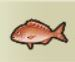 |
| Bacalao | Primavera, Invierno | Océano | 4 | 50 cm | 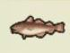 |
| Locha | No debe ser Invierno | Corriente, Estanque | 1 | 12 cm | 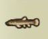 |
| Donko | Todo el año | Corriente, Estanque | 1 | 25 cm | 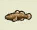 |
| Trucha Arcoiris | Todo el año | Lago, Puente, Cascada | 5 | 100 cm | 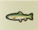 |
| Arenque | Todo el año | Océano | 1 | 30 cm | 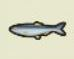 |
| Carpa Plateada | Todo el año | Corriente, Estanque | 5 | 100 cm | 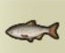 |
| Pez de arena | No debe ser Verano | Océano | 1 | 20 cm | 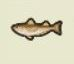 |
| Fletán | Todo el año | Océano | 5 | 80 cm | 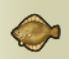 |
| Pez globo | Primavera, Invierno | Océano | 4 | 50 cm | 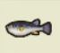 |
| Lubina Negra | Todo el año | No debe ser el océano | 4 | 50 cm | 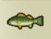 |
| Medregal | Primavera, Invierno | Océano | 5 | 100 cm | 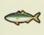 |
| Pez agalla azul | Todo el año | No debe ser el océano | 1 | 25 cm | 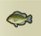 |
| Carpín* | Todo el año | Lago, Cascada | 4 | 50 cm | 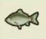 |
| Caballa de Ojotsk | No debe ser Verano | Océano | 3 | 40 cm | 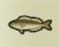 |
| Atún | Todo el año | Océano | 5 | 250 cm | 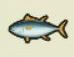 |
| Pez Luna | No debe ser Invierno | Océano | 5 | 250 cm | 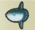 |
| Nombre | Estaciones | Ubicación | Nivel de carga | Tamaño maximo | Pez |
| Pez Leon | Todo el año | Océano | 2 | 30 cm | 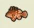 |
| Gallineta | No debe ser Invierno | Océano | 2 | 30 cm | 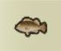 |
| Salmón Cereza | Todo el año | Puente | 2 | 30 cm | 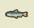 |
| Cabeza de serpiente manchada | No debe ser Invierno | Cascada, Corriente, Estanque | 5 | 80 cm | 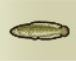 |
| Esperlano | No debe ser Verano | Cascada, Corriente, Estanque | 1 | 15 cm | 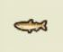 |
| Beltfish | Verano, Otoño | Océano | 5 | 200 cm |  |
| Sweetfish | Verano, Otoño | Puente, Corriente | 3 | 30 cm |  |
| Sand Smelt | Primavera, Verano | Corriente, Ocean | 3 | 30 cm |  |
| Congrio | Verano, Otoño | Océano | 5 | 150 cm | 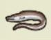 |
| Flying Fish | Verano, Otoño | Océano | 2 | 30 cm |  |
*Hay 2 peces en el juego que se llaman "Carin", pero son de colores diferentes
Peces guardianes
Hay 7 peces rey en el juego que solo puedes pescar usando una caña de pescar maldita/bendecida o mítica, cargada hasta el nivel 6 o nivel 7. Estos peces son raros y algunos tienen requisitos especiales que deben completarse antes de que puedan aparecer.
Una vez que atrapes un pez guardián, lo arrojarás nuevamente al agua. No puedes conservar ni vender a los reyes del río, pero sus retratos se anotarán en registro de pesca y dicho registro lo encontraras dentro de la estantería de la granja.
| Nombre | Estaciones | Ubicación | Requisitos | Pez |
|---|---|---|---|---|
| Huchen | Primavera, Verano, Otoño | Corriente, Arroyo | Conoce las recetas de cocina de "Pescado a la Plancha", "Sashimi" y "Sushi". |  |
| Anglerfish | Primavera, Invierno | Océano | Ir a pescar entre las 8:00 pm y las 8:00 am. |  |
| Pez gato del manantial | Invierno | En las aguas termales | (Sin requisitos). | 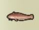 |
| Carp | Primavera, Verano, Otoño | Lago | Enviar al menos 200 peces. |  |
| Coelacanth | Todo el año | Nivel 9 de la Mina del Lago | Captura 5 o más peces guardianes. |  |
| Squid | Primavera, Invierno | Océano | Ir a pescar entre las 9:00 am y las 12:00 am (medianoche). |  |
| Arapaima Gigas | Verano | Estanque | Captura al menos 50 especies de peces. |  |
En el juego original de GBA, el calamar se podía atrapar arrojando un pez pequeño al océano antes de lanzarlo. Dado que la edición actualizada no permite a los jugadores lanzar objetos, se cambió el criterio.
El Arapaima Gigas se agregó al remake. Sabrás cuándo has capturado los tipos de peces necesarios cuando la Diosa te envíe una carta de felicitación. Los otros peces guardianes contarán para los 50 tipos únicos encontrados.
Los requisitos para Huchen son los mismos que los del juego GBA, pero la receta de Sashimi está en tu libro de cocina como parte de la cocina. El pescado a la parrilla se puede aprender cocinando una receta que requiera pescado mediano como ingrediente para cocinar, y el sushi se puede descubrir cocinando recetas que utilicen onigiri, pescado pequeño, pescado mediano y pescado grande.
Despues de atrapar todos los peces
Zack te recibirá por la mañana después de que pesques el último tipo de pez. Te felicitará por capturar todos los peces disponibles. ¡Qué bueno que te dio esa caña de pescar! No dará una recompensa, pero vale 1 punto del evento de grado agricola por ser un evento aleatorio.
También recibirás una carta de felicitación de la Diosa de la Cosecha y completarás el logro del juego Maestro Pescador.